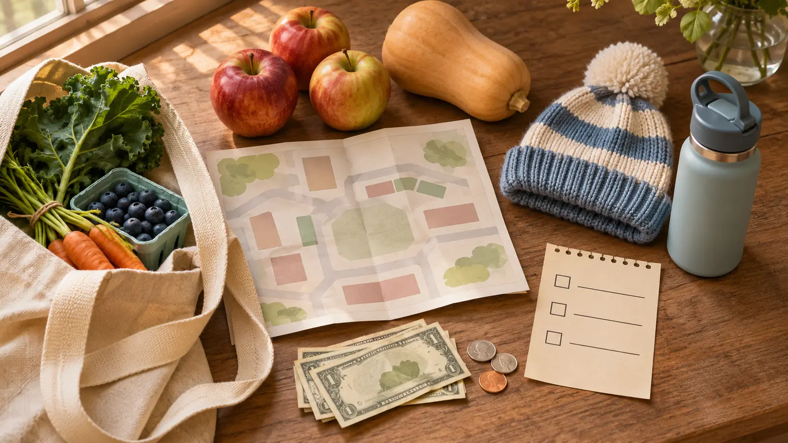

One known item
Buy something already on the household list: apples, carrots, bread or another item the family will use. The child compares two choices by unit, quantity or condition.
SYRACUSE · WEEKEND MORNING · AUTHORITY-EXPANSION
A busy market is not a free-range family browse. Give each child one job, decide the food budget before the first shed, buy three useful things, and go home while everyone still likes local produce.

The Regional Market is a working marketplace, not a children’s attraction. That is why it can be good. Kids can compare, ask, count and choose while the family buys food it actually needs. It is also easy to turn one bag of apples into ninety minutes of crowd weaving, impulse snacks and a parking-lot argument.
Use a 60- to 75-minute Saturday plan. Arrive near opening for lighter crowds or before noon for the broadest selection; that timing comes from the market’s current FAQ, not a guarantee that any vendor or product will be present. Pick three categories before leaving home, give the child a fixed role, and stop after one complete circuit. This is an evergreen market mission, not a competing November 7–8 event roundup.
The official visit page reviewed November 6, 2026 lists the market at 2100 Park Street, Syracuse, NY 13208. It lists the Saturday Farmers Market and Sunday Market year-round from 7 a.m.–2 p.m.; Saturday is the clearer fit for a produce-centered family mission. The FAQ says Saturday shoppers generally find the most variety before noon and fewer people right at 7 a.m. Vendors may sell out or leave early. “Open until 2” is not a promise that a particular product remains at 1:45.
Check current navigation before leaving. Drive time varies across Syracuse and Central New York, and event traffic near the fairgrounds or stadium area can change the last mile. The market says parking is available on three sides of the sheds. It does not promise a particular space, free capacity, or a short door-to-stall route. Follow current signs and attendants. Run the family parking-lot plan: adult exits first, children wait for the signal, bags stay secondary, and the group crosses together.
Bring a written food list and a small fixed discretionary amount. Some vendors accept cards and some do not. The market FAQ lists an ATM, gift tokens, and EBT coins with specific locations and hours. Those systems, fees, eligible items and operating windows can change; verify at the Welcome Center before building the visit around them. Never imply that every vendor accepts every payment type.
If a child needs more structure, use the receipt detective activity later at home. Do not turn a vendor line into a math class.
Do not promise samples. Ask before touching produce and follow each vendor’s instructions. For allergies, ingredients, cross-contact, preparation surfaces and packaged-food labels, ask the seller directly and leave when the answer is incomplete. A friendly answer is not a medical guarantee. The family food-allergy day-trip plan handles medication, communication and the no-safe-answer exit.
Bring a small water bottle and a backup snack that fits the family’s needs, then confirm where eating is currently allowed. Market Commons tenants operate independently with their own hours and policies. Do not promise a diner, café or particular prepared food as the meltdown backup.
Cold or rain: the sheds reduce exposure but do not turn the trip into a climate-controlled indoor outing. Dress for the walk and waiting. Crowd spike: switch from browsing to the one known item, then leave. Parking is chaotic: do not circle until everyone is depleted; use current official directions or choose another day. Child is done: skip the question item, buy the known item and exit. Low energy: one shed, one purchase, ten minutes.
If road or weather conditions make the trip wrong, use the 25-minute pantry label check at home. It solves a food-planning problem without pretending to replace the market.
Keep school-age children within the adult’s immediate control around moving vehicles, loading areas, carts, displays, hot food and crowds. Do not let children climb shed structures, handle knives or equipment, enter vendor space, sample without permission, or carry a bag that changes balance. Set a lost-person meeting rule, but do not use it as permission to split up; the lost-kid plan is the backup.
Skip when crowds are unsafe for the child’s current needs, the family requires a guaranteed allergen-safe meal, a particular vendor or product is the only acceptable outcome, the parking-to-shed route is not verified for a mobility need, the pet cannot stay home, or the child cannot remain close in a working market. A short grocery trip with a clear list is not a lesser outing.
Reviewed November 6, 2026 using the CNY Regional Market’s official visit page, FAQ, and vendor list. The 60- to 75-minute plan, three-item mission, budget ceiling and exit rule are independent editorial planning—not market policy, current inventory, vendor endorsement or access certification. No affiliate or booking links are attached.
MAKE THE WEEK COUNT
Build the plan your family can finish well, then leave enough energy for the next part of the day.
More family plans